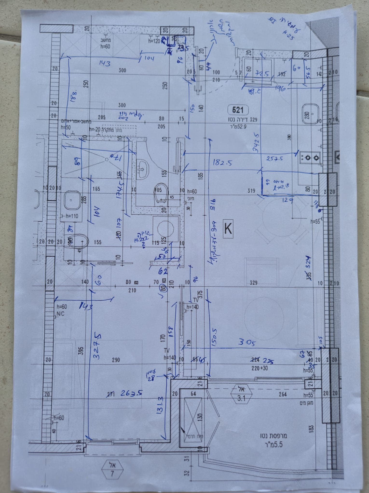
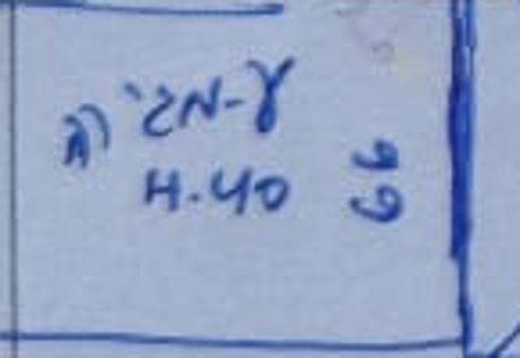
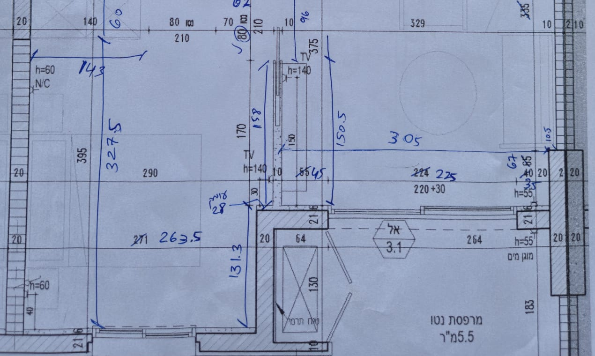
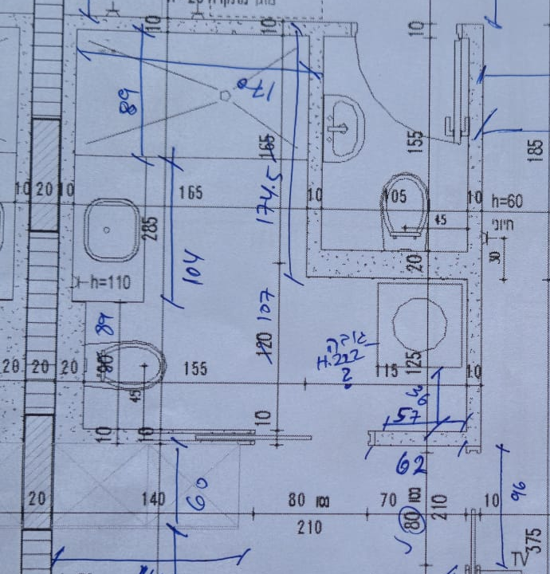

יחידות ופרטים שלא סומנו - הובהר
אישרת שכל המידות בכתב יד הן בסנטימטרים בין פני הגמר. קירות, דלתות וחלונות שלא סומנו נשארים כפי שהם בתכנית, אלא אם המידות החדשות מחייבות שינוי.
המידות תועדו; כמה נקודות קצה עדיין דורשות הבהרה.
המידות שסימנת בכתב יד וההבהרות שנתת הן הבסיס לגרסה החדשה. כאן מרוכזים כל הסימונים ופירושיהם, כדי שאפשר יהיה לבדוק ולתקן אותם בקלות.

התצלום מציג את התכנית המקורית עם מידות שנוספו לאחר הבנייה. השרטוט המודפס עצמו אינו בהכרח בקנה מידה שמתאים למצב הבנוי.
אישרת שכל המידות בכתב יד הן בסנטימטרים בין פני הגמר. קירות, דלתות וחלונות שלא סומנו נשארים כפי שהם בתכנית, אלא אם המידות החדשות מחייבות שינוי.
אושרו 60 ס״מ עומק ארון, 327.5 ס״מ פנויים ו־387.5 ס״מ מקצה לקצה. השרשרת הצדדית 96 + 158 + 131.3 מסתכמת ב־385.3 ס״מ, קצרה ב־2.2 ס״מ. היא אינה מחליפה את האורך הכולל שאישרת.
אושרו כיריים עם שני מבערים, עומק מגירה 40 ס״מ, ומרחק 342.5 ס״מ מקיר המקרר עד השפה הקרובה של השיש, ללא האי. לרוחב: 182.5 + 129 = 311.5 ס״מ, לעומת 305 ס״מ עד פני העמוד בסלון. יש להבהיר את מיקום קיר השירותים ואת נקודת הקצה של האי.
אישרת שהמידה 305 ס״מ מסתיימת בפן הפנימי של העמוד. גם 45 + 225 + 35 מסתכמים ב־305 ס״מ. עם בליטה של 10.5 ס״מ מתקבל רוחב מחושב של 315.5 ס״מ עד הקיר הראשי. פרטי המשקופים נשארים מהתכנית המקורית.
יש עדיין סימונים לא ודאיים בנישה העליונה ולפני המקרר, וכן סימוני 316 לעומת 309 והערת גובה בחדר הרחצה. כל אחד מהם נשמר בנפרד ואינו הופך למידה מחייבת בלי לפענח את משמעותו.

אושר: אי עם כיריים בעלות שני מבערים. הסימון H:40 הוא עומק המגירה. המידות שנקראו בתכנית הן 129 × 66 ס״מ. המרחק מקיר המקרר עד השפה הקרובה של השיש הוא 342.5 ס״מ, ללא האי.
יחידות מאושרות: סנטימטרים בין פני הגמר. פרטים אדריכליים שלא סומנו נשמרים מהתכנית המקורית. מספר קריא עדיין עשוי להתייחס לנקודות קצה לא ברורות. הסימון H:40 אינו גובה האי.
| סימון | אזור | מה נכתב | פירוש | ודאות הקריאה |
|---|---|---|---|---|
| A01 | מבואה | 143 | מהקיר השמאלי עד החלוקה המסומנת בארון או ברהיט; זו אינה מידת רוחב החדר כולו. | בינונית |
| A02 | מבואה | 104 | המשך שרשרת המידות האופקית בחלק העליון; יש לזהות את נקודת הקצה. | בינונית |
| A03 | מבואה | 188 | מחזית הרהיט העליון עד הפן הצפוני של קיר חדר הרחצה; נקודת ההתחלה אינה הקיר העליון. | בינונית |
| A04 | מבואה | 96 | הקטע האנכי של בליטת הקיר ליד הכניסה; יש להבהיר את המשטחים שביניהם נמדד. | בינונית |
| A05 | מבואה | 49 | קטע קצר ליד המשקוף או בליטת הקיר בכניסה, בסמוך למידה המקורית 60. | בינונית |
| A06 | מבואה | 150 | מהקצה התחתון של בליטת הקיר בכניסה עד הקיר העליון של חדר הרחצה. | בינונית |
| A07 | מבואה | 23.5? | מידה שנכתבה על גבי סימון קיים בנישה העליונה; ייתכן שהמספר הוא 23.5. | נמוכה |
| A08 | מבואה | סימנים לא קריאים | סימונים, מידות קטנות והערות נוספות ליד בליטת הקיר העליונה; התצלום נשמר לעיון. | נמוכה |
| A09 | מבואה | 202? | הערה כחולה מעל הקיר העליון של חדר הרחצה; ייתכן שמדובר בגובה ולא באורך בתכנית. | נמוכה |
| A10 | מטבח | 72.5 | רוחב המלבן של המקרר או הארון בצד העליון של המטבח. | בינונית |
| A11 | מטבח | 81.2? | מידה כחולה מתחת לחזית המקרר; הקריאה ונקודות הקצה אינן ודאיות. | נמוכה |
| A12 | מטבח | 196 | הריצה האופקית העליונה במטבח, ליד המידה המקורית 192 שנמחקה. | גבוהה |
| A13 | מטבח | 60 | עומק הארונות העליונים או התא הסמוך; יש להבחין בינו לבין 56.5. | בינונית |
| A14 | מטבח | 56.5 | עומק גוף הארון העליון; יש להבדיל בין הגוף, החזית והמידה 60. | בינונית |
| A15 | מטבח | 342.5 | מקיר המקרר עד שפת השיש הקרובה של האי, הפונה למטבח. לא כולל את עומק האי. אושר על ידך. | בינונית |
| A16 | מטבח | 257.5 | מהפן החיצוני של קיר השירותים עד קו שנראה כחזית השיש הימני; אין לפרש אוטומטית כרוחב בין קירות. | בינונית |
| A17 | מטבח | 182.5 | מהפן החיצוני של קיר השירותים עד הקצה השמאלי של האי. | בינונית |
| A18 | מטבח | 129 | אורכו האופקי של האי. | גבוהה |
| A19 | מטבח | 66 | עומק האי בתכנית; המספר נקרא לאחר סיבוב ההערה ב־180 מעלות. | בינונית |
| A20 | מטבח | H:40 | עומק מגירה, כפי שאישרת. למרות האות H, זו אינה מידת גובה האי. | בינונית |
| A21 | מטבח | כיתוב בתוך האי | אישרת שזהו אי עם כיריים בעלות שני מבערים; הכיתוב המקורי עצמו אינו מפוענח במלואו. | נמוכה |
| A22 | מטבח | הערה ליד נקודה | סימון כחול והערה מתחת לעמוד הימני העליון; ייתכן שמדובר במיקום נקודת שירות. | נמוכה |
| A23 | חדר רחצה ושירותים | 170 | רוחב המקלחון בין פני הגמר של הקיר השמאלי לבין הקיר המפריד. | גבוהה |
| A24 | חדר רחצה ושירותים | 89 | עומק המקלחון. | גבוהה |
| A25 | חדר רחצה ושירותים | 104 | האורך האנכי של ארון הכיור, מתחת למקלחון. | בינונית |
| A26 | חדר רחצה ושירותים | 89 | הערה אנכית באזור שבין ארון הכיור לאסלה; יש להבהיר את נקודות הקצה. | בינונית |
| A27 | חדר רחצה ושירותים | 174.5 | מהקיר העליון של המקלחון עד הפן החיצוני התחתון של הקיר שמתחת לשירותים. | גבוהה |
| A28 | חדר רחצה ושירותים | 107 | מהקיר שמתחת לשירותים עד הקיר התחתון של חדר הרחצה; הפנים המדויקים למדידה טרם הובהרו. | בינונית |
| A29 | חדר רחצה ושירותים | H:222 | סימון שנראה כגובה ליד המכשיר, עם סימן שאלה; אינו אורך אופקי בתכנית. | בינונית |
| A30 | חדר רחצה ושירותים | 36 | מרחק מחזית המכשיר עד הקיר התחתון של חדר הרחצה. | בינונית |
| A31 | חדר רחצה ושירותים | 57 | רוחב קטע הקיר הפנימי בצד ימין של דלת חדר הרחצה. | גבוהה |
| A32 | חדר רחצה ושירותים | 62 | מידה חיצונית או כוללת סמוכה של קטע הקיר הימני; נבדלת מהמידה 57. | בינונית |
| A33 | חדר רחצה ושירותים | 80 מוקף בעיגול | המידה המקורית 80 ליד פתח הרחצה מוקפת בעיגול; לא נכתב מספר חלופי. | בינונית |
| A34 | חדר שינה | 60 | עומק הארון שמתחת לחדר הרחצה; אושר על ידך. | גבוהה |
| A35 | חדר שינה | 143 | רוחב הארון שמתחת לחדר הרחצה. | גבוהה |
| A36 | חדר שינה | 327.5 | מחזית הארון עד הקיר הפנימי של החלון. אישרת שסך האורך הוא 387.5 ס״מ: 60 + 327.5. | גבוהה |
| A37 | חדר שינה | 96 | מהפן החיצוני התחתון של חדר הרחצה עד תחילת מחיצת חדר השינה. | בינונית |
| A38 | חדר שינה | 158 | אורך מחיצת חדר השינה, בצד הפונה לחדר השינה. | בינונית |
| A39 | חדר שינה | 131.3 | ממדרגת הקיר ליד המרפסת עד הפן הפנימי של הקיר עם החלון. | גבוהה |
| A40 | חדר שינה | 263.5 | הרוחב הפנוי בחלק התחתון של חדר השינה. | גבוהה |
| A41 | חדר שינה | 28 | מידת העומק האופקית ליד הקצה התחתון של המחיצה; המשטחים המדויקים טרם הובהרו. | בינונית |
| A42 | סלון | 316 | אורך חיצוני לאורך הצד הפונה למעבר, מאזור הקיר העליון עד הקיר התחתון של חדר הרחצה. | בינונית |
| A43 | סלון | 309 והערה נוספת | מידה חלופית ליד 316, עם הערה שנראית כמתייחסת למשקוף; אין להחליף ביניהן בלי להבהיר את נקודות הקצה. | בינונית |
| A44 | סלון | 150.5 | מאזור תחילת מחיצת חדר השינה עד הפן הפנימי של קיר המרפסת; נקודת ההתחלה שונה לכאורה מזו של 158. | בינונית |
| A45 | סלון | 324 | אורך הקיר הימני בין הקצה התחתון של העמוד העליון לבין הקצה העליון של העמוד התחתון. | גבוהה |
| A46 | סלון | 305 | הרוחב הפנוי מהפן הימני של מחיצת חדר השינה עד הפן הפנימי של העמוד הבולט. נקודת הקצה אושרה על ידך. | גבוהה |
| A47 | סלון | 10.5 | בליטת העמוד הימני התחתון ביחס לקיר הראשי. | גבוהה |
| A48 | סלון | 67 | הקטע של העמוד הימני התחתון שמעל פתח המרפסת. | גבוהה |
| A49 | סלון | 45 | קטע הקיר שמשמאל לפתח המרפסת. | בינונית |
| A50 | סלון | 225 | רוחב פתח ההזזה למרפסת. | גבוהה |
| A51 | סלון | 35 | קטע הקיר שמימין לפתח המרפסת. | בינונית |
| A52 | מבואה | גובה 25? | הערה בכתב יד בפינה העליונה הימנית, מחוץ לדירה; הקריאה והמשמעות אינן ודאיות. | נמוכה |


29 בספטמבר 2026 · קובצי התכנית המקורית נשמרו.